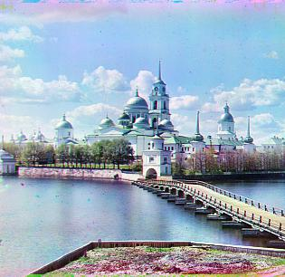
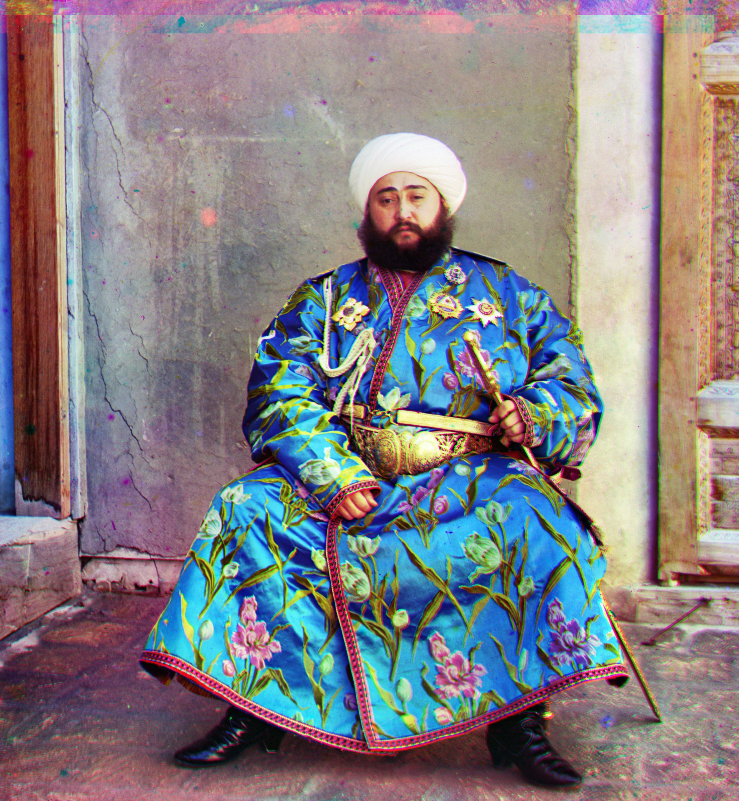
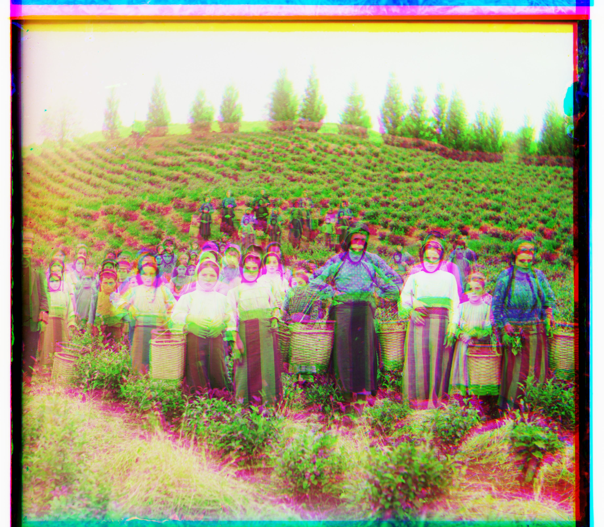
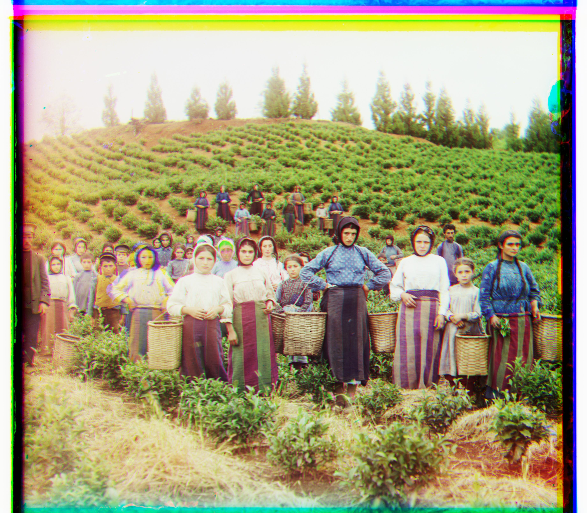
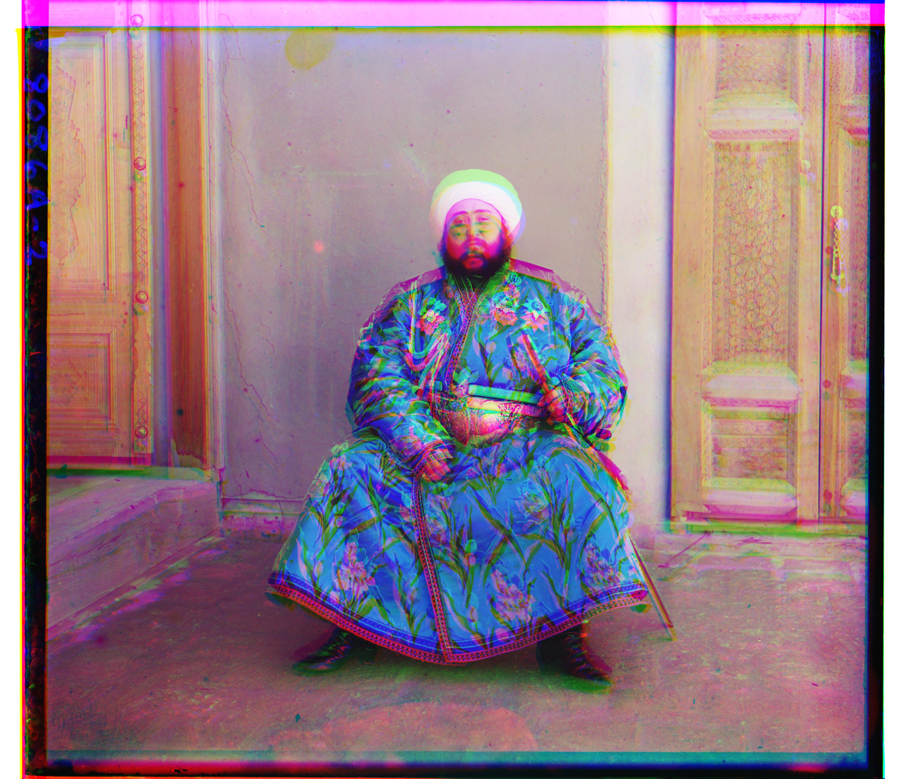
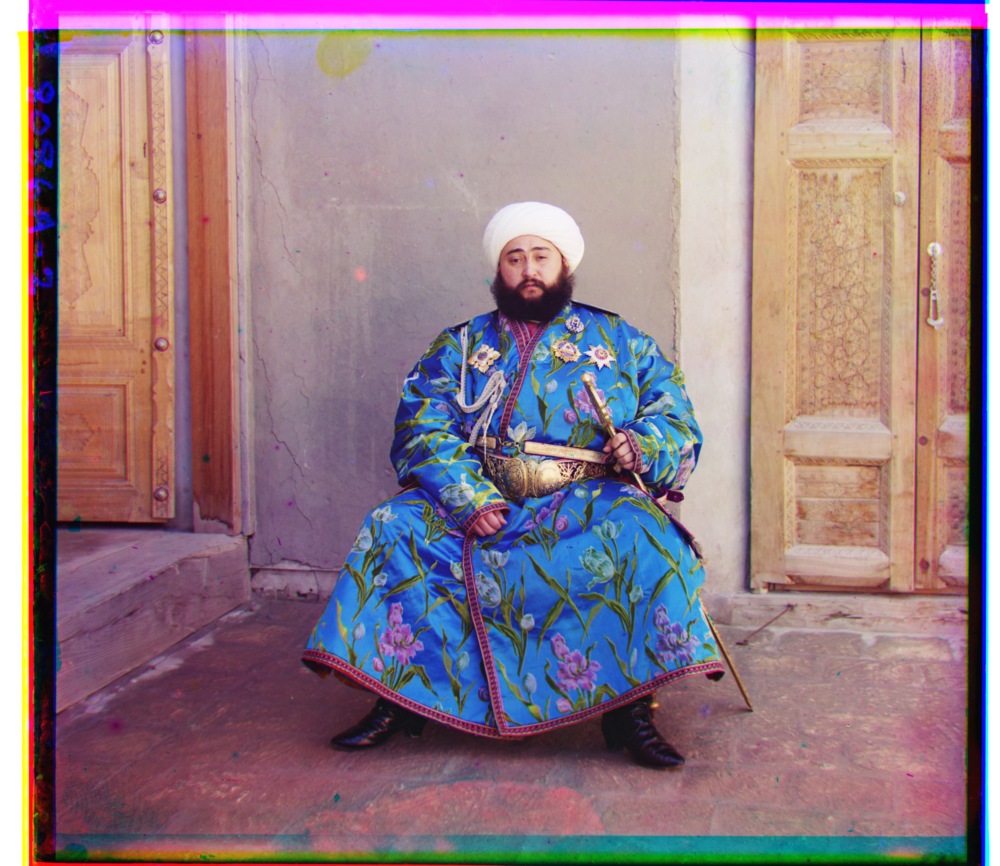

Sergei Mikhailovich Prokudin-Gorskii (1863-1944) was a visionary in the field of color photography. In the early 20th century, he captured thousands of color photographs across the Russian Empire using a unique method of recording three exposures of each scene through red, green, and blue filters. The goal of this project is to take the digitized Prokudin-Gorskii glass plate images and, using image processing techniques, produce color images with minimal visual artifacts.
Single Alignment & Metric Exploration
The principle of single alignment involves calculating the optimal displacement between channels by using the Normalized Cross-Correlation (NCC) metric. The NCC metric measures the similarity between two images by computing the dot product of normalized vectors derived from the images. This approach is particularly robust when dealing with varying brightness levels across different channels, as it focuses on the structural similarities rather than raw pixel values.
As recommended in the project description, I designed an align function which performs an exhaustive search over a [-15,15] range of pixel displacements by using two for loops. For each possible displacement, the function uses np.roll to shift the image and then calculates the NCC score. The displacement which yields the highest NCC score is considered the optimal alignment.
During the experimentation, it turned out that using Normalized Cross-Correlation (NCC) as the alignment metric produced better results compared to simpler metrics like the Sum of Squared Differences (SSD). The primary reason for this I think is that NCC is inherently more robust in handling variations in brightness between the different color channels. While SSD operates on raw pixel values, making it sensitive to differences in intensity across the channels, NCC normalizes the pixel values before computing the similarity. This normalization process allows NCC to focus on the structural and spatial patterns within the images rather than being influenced by varying brightness levels.
The large size of the Prokudin-Gorskii glass plate images presents a challenge when performing exhaustive search alignment, as it becomes computationally expensive. To tackle this, I thought about how image pyramids, as indicated in the project description, could offer a solution by reducing the search space and computation time.
I began by downsampling the image to a coarser scale, which allowed for a faster, rough alignment. My idea was that if I could find a decent alignment at a lower resolution, I could then refine it by moving to higher resolutions. This multi-scale approach seemed like a practical way to balance accuracy and efficiency.
Starting from the coarser scale, I adjusted the alignment based on the smaller image, then gradually increased the resolution, refining the alignment at each step. This step-by-step refinement ensured that the final alignment was both precise and computationally feasible, even for large images.
In the process of improving the output images, I explored different cropping methods to remove unwanted borders and artifacts. Initially, I implemented a proportional cropping method, which crops the image to a fixed percentage of its original size. This was a simple and effective way to ensure that the important content remained in the center, but it wasn't automatic cropping.
After reading about other techniques on Ed discussion, I came across the use of cv2.findContours.It works by detecting the outermost edges of the content in the image and cropping the image accordingly. This approach dynamically adjusts the cropping based on the actual content of the image, providing more accurate and flexible results.However, I think the application of this method does not achieve good results.
Cathedral - Before croppingCathedral - After cropping
4.2 Auto Contrasting
Auto contrasting is applied to enhance the image's visual quality by adjusting the pixel intensity range.
This technique stretches the intensity values so that the darkest pixel is mapped to zero and the brightest pixel is mapped to one. By doing this, the image achieves better contrast, which highlights details and improves overall clarity. In this project, I used the sk.exposure.equalize_adapthist function to implement this feature, ensuring a more balanced distribution of pixel intensities across the image. This section showcases the improvements made using this method to enhance image quality effectively.
Monastery - Before contrasting

Monastery - After contrastingEmir - Before contrasting

Emir - After contrasting
4.3 Edge Detection
I applied the Canny edge detector to improve image alignment by focusing on object edges rather than overall brightness. This method works particularly well when different color channels have varying brightness levels, which can make alignment based on pixel values less reliable. By detecting edges, the algorithm captures key structural features in each color channel, some of the results are shown below.

Harvesters - Before edge detection

Harvesters - After edge detection

Emir - Before edge detection

Emir - After edge detection
I would like to express my gratitude to ChatGPT for providing the website template and for assisting me throughout the development process. The insightful guidance helped improve the quality of the project.
For a detailed conversation and insights provided by ChatGPT, you can refer to the following link: ChatGPT Conversation.